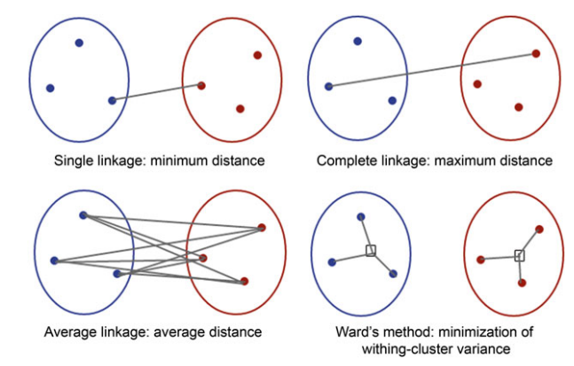
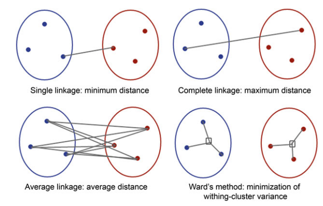

3 Clustering
3.1 Contextualização
Quando aplicar?
- Ao necessitar agrupar as observações em grupos:
- homogêneos internamente
- heterogêneos entre si
- Ao necessitar agrupar as observações em grupos:
Características
- técnica exploratória sem caráter preditivo
- necessário reagrupamento se
- nova observação é adicionada
- novas variáveis são adicionadas
Métodos
- Hierárquico aglomerativo
- Cluster definidos ao longo da análise
- Não hierárquico K-means
- Cluster definido a priori
- Hierárquico aglomerativo
3.2 Hierárquico Aglomerativo
3.2.1 Tratamento inicial
- É sucetível a dados em escala diferentes
- Necessário realizar padronização antes
- \(ZX_{ji}=\dfrac{X_{ji}-\bar{X_j}}{S_j}\)
3.2.2 Escolhas
- Medida de dissimilaridade (distância)
Distância Minkowski
- generalização da Manhatan e da euclidiana
- \(d_{pq}=\left[\sum_{j=1}^k (|ZX_{jp}-ZX_{jq}|)^m \right ]^{\frac{1}{m}}\)
Distância euclidiana
- \(\equiv\) Minkowski com norma 2 (m=2)
- \(d_{pq}=\sqrt{\sum_{j=1}^k (ZX_{jp}-ZX_{jq})^2}\)
Distância euclidiana quadrática
- \(d_{pq}=\sum_{j=1}^k (ZX_{jp}-ZX_{jq})^2\)
Distância Manhattan
- \(\equiv\) Minkowski com norma 1 (m=1)
- \(d_{pq}=\sum_{j=1}^k |ZX_{jp}-ZX_{jq}\)
Distância Chebychev
- \(d_{pq}=máx|ZX_{jp}-ZX_{jq}\)
Distância Canberra
- apenas para variáveis com valores positivos
- somatória da razão do módulo da diferença pela soma
- \(d_{pq}=\sum_{j=1}^k\dfrac{|ZX_{jp}-ZX_{jq}|}{ZX_{jp}+ZX_{jq}}\)
Correlação de Pearson (medida de semelhança)
Medida de emparelhamento simples (Sokal & Michener (1958))
Dada uma tabela com 2 observações (linhas) (q e p)
Obs p 0 1 Total Obs q 0 a b a+b 1 c d c + d Total a + c b + d a + b + c + d - a: quantidade de colunas em que as duas observações apresentaram 0
- b: quantidade de colunas em que a primeira observação apresentou 0 e a outra 1
- c: quantidade de colunas em que a primeira observação apresentou 1 e a outra 0
- d: quantidade de respostas em que as duas observações apresentaram 1
A medida de emparelhamento simples equivale ao percentual de valores iguais entre as duas observações
- \(s_{pq} = \dfrac{a+d}{a+b+c+d}\)
- \(a + d\): todos iguais
- \(a + b + c + d\): todos valores
- Método de encadeamento das observações
- Indica qual distância utilizar entre clusters
- Tipos
- 
- Nearest neighbor (single linkage)
- Menor distância
- Furthest neighbor (complete linkage)
- Maior distância
- Between neighbor (average linkage)
- Distância média
- 
- N Grupos
- Critério
- Pode-se adotar o tamanho do salto
para a incorporação do seguinte- Saltos muito elevados indicam
agrupamento de observações mais distintas
- Saltos muito elevados indicam
- Comparar dendrogramas obtidos por diferentes métodos
- Pode-se adotar o tamanho do salto
- Critério
3.2.3 Execução
- Objetivo
- aglomerar iterativamente observações separadas em um único cluster
- Algoritmo
- Inicia-se com n observações em n clusters
- Une-se 2 observações com menos distância (sobram n-1 clusters)
- Enquanto houver mais de 1 cluster:
- Um novo grupo é formado por:
- união de 2 novas observações
- união de nova observação a um cluster
- Um novo grupo é formado por:
- De posse do dengrograma, visualmente é possível definir o número de clusters ao traçar uma linha horizontal no gráfico: o número de vezes que a linha corta o dendrograma indica quantos clusters formam-se naquele nível [].
- Visualização
- dendrograma
- Dicas práticas
- Dados que o objetivo é ter grupos mais homogêneos,
deve-se evitar escolher o número de clusters em alturas muito altas,
para que uma observação muito distinta faça parte do cluster. - O melhor método de linkage em geral é feita visualmente mesmo,
observando qual forma os melhores agrupamentos - É possível observar o método de linkage já ao gerar a matriz cofenética (de distâncias):
se as distâncias forem muito pequenas e parecidas,
provavelmente o complete linkage terá mais sucesso.
Se forem distantes, então talvez o single linkage poderá resolver. - Ao analisar um dendrograma resultante, ao traçarmos uma linha horizontal no gráfico, o número de vezes que a linha corta o dendrograma indica quantos clusters formam-se naquele nível.
- Dados que o objetivo é ter grupos mais homogêneos,
3.2.4 Análise dos agrupamentos
- Quais variáveis contribuem?
- O que
- A variabilidade das variáveis métricas dentro do grupo
é menor que do que a variabilidade entre grupos?
- A variabilidade das variáveis métricas dentro do grupo
- Como
- Aplica-se teste F para análise de variância
- \(F = \dfrac{\text{Variabilidade entre (extra) grupos}}{\text{Variabilidade dentro dos (intra) grupos}}\)
- Graus de liberdade no numerador: K-1
- Graus de liberdade no denominador: n-1
- K = nº clusters
- n = tamanho da amostra
- Quanto maior o valor da estatística F,
maior a relevância da variável para a formação de pelo menos um dos clusters
- Aplica-se teste F para análise de variância
- O que
3.3 Não Hierárquico K-Means
3.3.1 Tratamento inicial
- É sensível a dados em escalas diferentes
- Necessário realizar padronização antes
- \(ZX_{ji}=\dfrac{X_{ji}-\bar{X_j}}{S_j}\)
- Necessário realizar padronização antes
3.3.2 Escolhas
- Quantidade K de clusters é escolhida a priori